为什么 0.1 + 0.2 !== 0.3
背景
在浏览器控制台窗口输入以下两行代码，结果出乎意料
1 | 0.1 + 0.2 > 0.3 // true |
前置知识
在计算机的世界里，应该是只有二进制数据的，不是 0 就是 1，为了表达生活中最为常见的十进制数据，则就会有个转换过程
十进制转为二进制
十进制转换为二进制这个过程整体总结就是：
- 整数采用
整数除 2 取余，直到商为 0 时为止，将余数逆序排列 - 小数采用
小数部分乘以 2，取整，直到得到小数部分 0 或达到所要求的精度为止，将整数顺序排列
二进制转为十进制
1 | // 以二进制 10101101.1101 为例 |
科学计数法
十进制
173.8125的科学计数法为1.738125 * 10^2十进制
173.8125对应的二进制10101101.1101，进一步可以使用二进制的科学计数法来表示，对应的二进制科学计数法为1.01011011101 * 2^7，跟十进制类似，将底数10换为了2，7则代表小数点往右多少位
重点：
1.01011011101 * 2^7为二进制，将其转换为10进制的过程为：
- 先将
1.01011011101做为2进制转换为10进制，得到1.35791015625- 然后将其乘以
2^7（即1.35791015625 * 128），最后得到的十进制为173.8125
二进制的边界问题
n 位二进制可表示的最大数值范围，是 n 位的每一位都为 1，对应十进制为 2^n - 1
1 | // 8 位二进制 11111111 可表示的最大值，有两种计算方法 |
IEEE 754 规范-双精度（64位）
众所周知 JS 仅有 Number 这个数值类型，而其严格遵循 ECMAScript 规范定义的 IEEE754 64 位双精度浮点数规则。而浮点数表示方式具有以下特点：
- 浮点数可表示的值范围比同等位数的整数表示方式的值范围要大得多
- 浮点数无法精确表示其值范围内的所有数值，而有符号和无符号整数则是精确表示其值范围内的每个数值
- 浮点数只能精确表示
m*2e的数值 - 当
biased-exponent为2e-1-1时，浮点数能精确表示该范围内的各整数值 - 当
biased-exponent不为2e-1-1时，浮点数不能精确表示该范围内的各整数值
由于部分数值无法精确表示（存储），于是在运算统计后偏差会愈见明显
IEEE 754 浮点数由三个部分组成，分别是 sign bit (符号位)、exponent bias (指数偏移值) 和 fraction (分数值)，因此一个 JavaScript 的 number 表示二进制应该是如下格式：
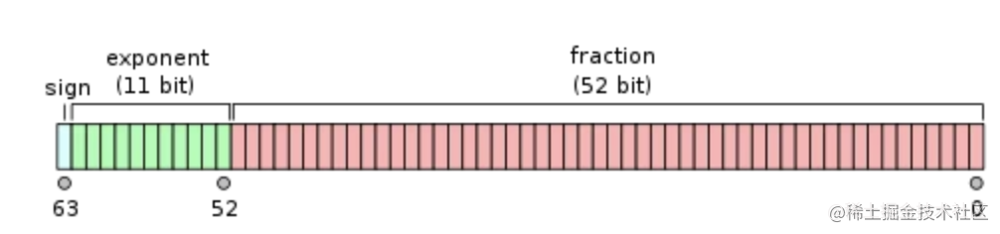
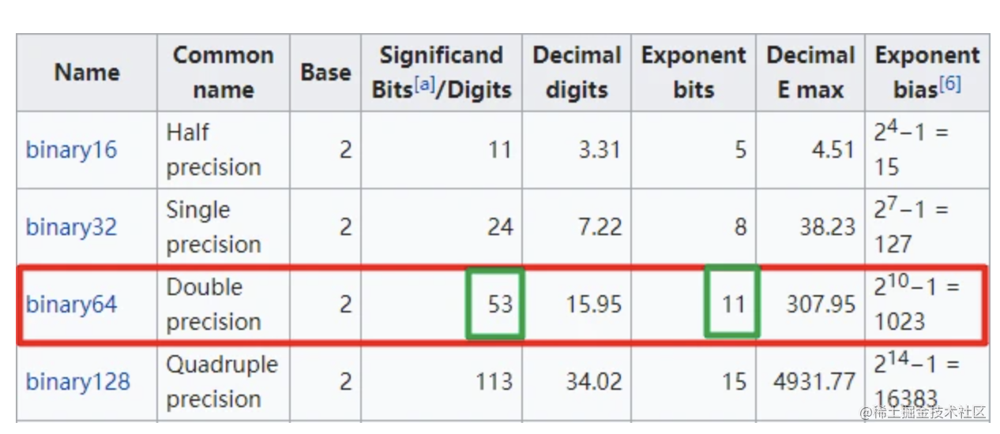
sign bit：1bit，0表示正数，1表示负数exponent bias：11bit，表示次方数，在(二进制的)科学计数法中定义2的多少次幂，即需移动的位数；由于会存在正负数，所以这里用了一个偏移的方式处理，即真正的指数+1023，这样的话就表示了[-1023 ~ 1024]；而-1023也就是全0，1024就是全1fraction：表示精确度(小数部分，规范中会省略个位数上的1)，52bit，这里需要注意的是由于小数点前面1位必须为1（隐藏位），所以实际上是52+1=53位
一个浮点数 (
Value) 其实可以这样表示：value = sign * exponent * fraction
十进制转换为 IEEE 754 标准主要转换过程主要经历 3 个过程：
- 转换为二进制表示
- 将转换后的二进制通过科学计数法表示
- 将通过科学计数法表示的二进制转换为
IEEE 754标准表示
示例：十进制 0.1 转换结果如下
- 将
0.1转换为二进制0.00011001100110011001100110011001100110011001100110011001（1001 无限循环） - 将上述二进制转换为科学计数法得到：
2^-4 * 1.1001100110011001100110011001100110011001100110011001（1001无限循环） - 从科学计数法中可以得到
sign值为0、exponent值为-4，-4 + 1023（固偏移定值，64 位的情况下为 1023）= 1019再转换为11位二进制为01111111011 fraction为科学计数法小数点后面的值1001100110011001100110011001100110011001100110011010（fraction最长为52位，若小数点后的长度不够52位用0补齐，但这里超过了52位所以这里产生了截断，截断时由于第53位为1所以会产生进位，小数点左边的1计算机不会自动存储，在再次换算为10进制时会自动加上小数点左边的1）- 最终得到
0.1存储在计算机中的二进制为：0 01111111011 1001100110011001100110011001100110011001100110011010
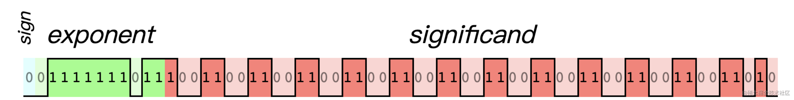
在上面第 4 步中可看到 0.1 在存储的过程中被截断了，因为计算机最多只能存 52 位，所以这里就产生了精度偏差，这样当再次将二进制换算为十进制时就不是原来的值
能被转化为有限二进制小数的十进制小数的最后一位必然以
5结尾 (因为只有0.5 * 2才能变为整数，即二进制能精确地表示位数有限且分母是2的倍数的小数)，所以十进制中一位小数0.1 ~ 0.9当中除了0.5外的值在转化成二进制的过程中都丢失了精度
将上图中的二进制再次转换为十进制的的步骤：
sign为0代表正数+- 指数偏移值（
exponent）为01111111011转换为十进制为1019，这时还要减去之前加上的固定偏移值1023得到最终指数的值为-4 - 小数点右侧的二进制（
significand）为1001100110011001100110011001100110011001100110011010，由于存储时省略了小数点左边的1所以需要加上，得到1.1001100110011001100110011001100110011001100110011010 - 最终用上面的公式带入得到
value = +2^-4 * 1.1001100110011001100110011001100110011001100110011010最后将这串二进制转换为10进制为0.100000000000000005551115123126即可
所以前面的公式具体一点可以写成下面这样：其中的 e 为指数偏移值
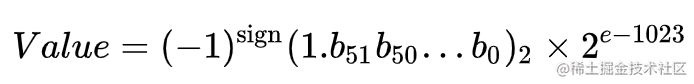
前面计算指数偏移值时，会加上一个固定偏移值 1023，该值的计算公式如下：
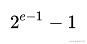
其中的 e 为存储指数的比特的长度，在 64 位双精度二进制中存储指数的比特长度 e 为 11，从而可以计算得到该固定偏移值为 1023
采用指数的实际值（例如前面的 -4）加上固定偏移值的办法表示浮点数的指数，好处是可以用长度为 e 个比特的无符号整数来表示所有的指数取值，这使得两个浮点数的指数大小的比较更为容易，实际上可以按照字典次序比较两个浮点表示的大小
指数的实际值可能为正可能为负，所以
11比特中需有一位用来表示符号位，如果采用补码表示的话，全体符号位sign和指数自身的符号位将导致不能简单的进行大小比较。所以就采用了这种加上固定偏移值的方式，中文称作阶码
所以 64 位双精度二进制中指数部分本来能表示的范围为 -1023 ~ +1023（2^10 - 1，第 11 位为符号位），在加上一个固定偏移值 1023 后，指数偏移值范围就为 0 ~ 2046，这样指数偏移值都为正数，在存储时就不需关心符号的问题了，就可直接用 11 位来存储指数偏移值，最终存储时指数偏移值的范围就为 0 ~ 2^11 - 1（2047）
另外在重新转换为 10 进制时，为了还原指数实际的值，指数偏移值需要减去固定偏移值 1023，最终指数在未加上固定偏移值前的的实际值的范围为 -1023 ~ 1024，其中 -1023 用来表示 0，1024 用来表示无穷，除去这两个值指数的范围为 -1022 ~ 1023
前面的公式还需要在细分一下，一共有两个公式：
当指数偏移值不为
0时，使用下面的公式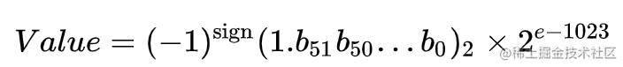
当指数偏移值为
0时，使用下面的公式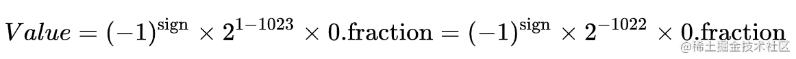
| sign | e 指数偏移值 = 实际值+固定偏移1023 | fraction | 计算过程 | JS 中的值 |
|---|---|---|---|---|
| 0 | 11111111110（1023+1023） | 1111111111111111111111111111111111111111111111111111 | (-1)^0 x 2^1024=1.7976931348623157e+308 | Number.MAX_VALUE |
| 0 | 00000000000（-1023+1023） | 0000000000000000000000000000000000000000000000000001 | (-1)^0 x 2^-52 x 2^-1022=5e-324 | Number.MIN_VALUE 最小的正数 |
| 0 | 10000110011（52+1023） | 1111111111111111111111111111111111111111111111111111 | (-1)^0 x 2^53=9007199254740991 | Number.MAX_SAFE_INTEGER |
| 1 | 10000110011（52+1023） | 1111111111111111111111111111111111111111111111111111 | (-1)^1 x 2^53=-9007199254740991 | Number.MIN_SAFE_INTEGER |
| 0 | 11111111111（1024+1023） | 0000000000000000000000000000000000000000000000000000 | (-1)^0 x 1 x 2^1024 | Infinity 正无穷 |
| 1 | 11111111111（1024+1023） | 0000000000000000000000000000000000000000000000000000 | (-1)^1 x 1 x 2^1024 | -Infinity 负无穷 |
| 0 | 00000000000 | 0000000000000000000000000000000000000000000000000000 | (-1)^0 x 0 x 2^-1022 | 0 |
| 1 | 00000000000 | 0000000000000000000000000000000000000000000000000000 | (-1)^1 x 0 x 2^-1022 | -0 |
在计算过程中，有一步没有写出来，以第一行为例，看看
2^1024是怎么来的：1.(52个1) × 2^(2046 - 1023) = 1.(52个1) × 2^1023 = (53 个 1) × 2^(1023-52) = 53位二进制表示的十进制为(2^53 - 1) × 2^971
还有一种方法就是直接将1.fraction 转换为 10 进制再 ✖️ 指数部分，如上面也可以写作1.(52个1) × 2^(2046 - 1023) = 1.9999999999999998 * 2^1023
大数危机，为什么 2^53-1 是最大安全整数呢？比它大会怎样？
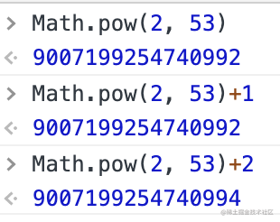
以
2^53来说明一下为什么2^53-1是最大安全整数，安全在哪里2^53转二进制 =>100000000000000000000000000000000000000000000000000000(53个0)转为科学计数法 =>
1.00000000000000000000000000000000000000000000000000000(53个0)×2^53存入计算机 => 尾数位只有
52位，所以截掉末尾的0只能存52个02^53+1转二进制 =>100000000000000000000000000000000000000000000000000001(52个0)转为科学计数法 =>
1.00000000000000000000000000000000000000000000000000001(52个0)×2^53存入计算机 => 尾数位只有
52位，所以截掉末尾的1只能存52个0可以看出来，
2^53和2^53+1在计算机中的存储的分数部分、指数部分都相同，所以两个不同的数在计算机中的存储是一样的，当大于这安全值时就可能会出现精度丢失，变得非常的不安全。所以2^53-1是JavaScript里的最大安全整数
既然小数在计算机中会有精度丢失，那为什么 num = 0.1 能得到 0.1 呢?
Number.toPrecision()跟toFixed类似，表示要保留几位有效数字。前面知道0.1在存储的过程中其实是丢失了精度的，因为它在转换为2进制时为无限循环，之所以写0.1能得到0.1是因为js帮做了处理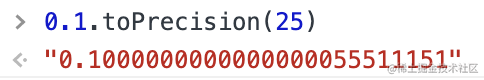
从图中看到让
0.1保留25位有效数字，得出来的结果并不是0.1，所以js默认帮我们做了截断。这个问题就可以转化为：双精度浮点数是按什么规则来截断的呢？ 在双精度浮点数的英文wiki中可以找到如果十进制有效数字未超过
15位，存储和读取时十进制都一样，js不会截断如果十进制有效数字至少有
17位，由于分数位（presicion）最多只能存储53位，最终以该53位为准，后面的就会被截断，截断后重新计算出来的就是一个截断后的数字，例如0.1跟0.10000000000000001（17）其实是相等的，因为后者在存储时转换为双精度浮点数的形式跟前者的双精度浮点数的形式是一样的，所以后者在存储时存储的就是0.1
为什么 例如1.335.toFixed(2) 得到的是 1.33？
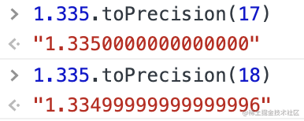
1.335在存储为数字时其实存储的双精度浮点数就为1.335，如下图中的双精度浮点数的表示，虽然在存储时会把53位及后面的截断，但当把下面的双精度浮点数换算为10进制，其实得到的就是1.335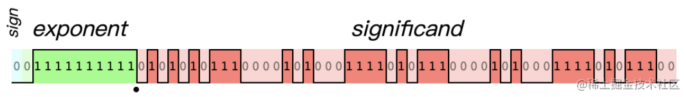
为什么调用
toPrecision还能得到1.335被截断前的值呢？首先存储的1.335是Number格式，Number格式受最大存储位数的限制，所以1.335会被截断，但在调用toPrecision()时可看到其实是以字符串的形式表示出来的，字符串不管再长都能表示出来，所以可以得到被截断前的值。当再将截断前的值转换为Number时，由于受双精度浮点数存储位数的限制，存储时就又会得到截断后的值
0.1 + 0.2 !== 0.3 -> true 分析
有了以上铺垫没，既然 0.1 + 0.2 !== 0.3，因此不仅是 JavaScript 会产生这种问题，只要是采用 IEEE 754 双精度浮点数编码方式来表示浮点数的都会产生这类问题。分析过程如下：
1 | // 0.1 |
这里的 m 指的是小数点后的 52 位，而小数点前的整数部分 1 就是前面说过的隐藏位
然后把它们相加，这里有一个问题就是指数不一致时应该怎么处理，一般是往右移，因为即使右边溢出了，损失的精度远远小于左移时的溢出
1 | e = -4; |
转化：
1 | e = -3; |
得到
1 | e = -2; |
此时已经溢出来了（超过了 52 位），这时就要做四舍五入了，那怎么舍入才能与原来的数最接近呢？如 1.101 要保留 2 位小数则结果有可能是 1.10 和 1.11，这时两个都是一样近，取哪一个呢？规则是保留偶数的那一个，在这里就是保留 1.10
回到上面之前，结果就是：
1 | m = 1.0011001100110011001100110011001100110011001100110100 （52位） |
然后得到最终的二进制数：
1 | 2 ^ -2 * 1.0011001100110011001100110011001100110011001100110100 |
最终转化为十进制就是：0.30000000000000004
解决方案
特殊常数 Number.EPSILON
根据规格，Number.EPSILON 表示 1 与大于 1 的最小浮点数之间的差，Number.EPSILON 实际上是 JavaScript 能够表示的最小精度，误差如果小于这个值就可以认为已经没有意义了，即不存在误差
比较两个数字与 Number.EPSILON 之间的绝对差值
1 | function numbersEqual(num1, num2) { |
考虑兼容性问题，在 chrome 中支持这个属性，但 IE 并不支持(IE10 不兼容)，所以还要解决 IE 的不兼容问题
1 | Number.EPSILON=(function(){ //解决兼容性问题 |
toFixed()
toFixed(num) 方法可把 Number 四舍五入为指定小数位数的数字
- 参数描述：
num必需，规定小数的位数，是0 ~ 20之间包括0和20的值，有些实现可以支持更大的数值范围，若省略了该参数将用0代替 - 特别注意：
toFixed()返回一个数值的字符串表现形式，该数值在必要时进行四舍五入，另外在必要时会用0来填充小数部分，以便小数部分有指定的位数。若数值大于1e+21，该方法会简单调用Number.prototype.toString()方法并返回一个指数记数法格式的字符串 - 可以这样解决精度问题
1 | parseFloat((数学表达式).toFixed(digits))； // toFixed() 精度参数须在 0 与20 之间 |
原生封装
1 | function add(num1, num2) { |
第三方类库
math.js、D.js、bigNumber.js、decimal.js、big.js 等